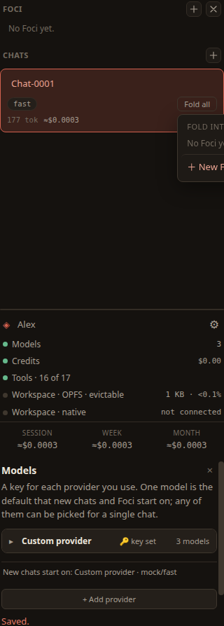

Chats & Foci
A chat is a conversation with the daimon. A Focus is a chat you have distilled into a repeatable method. This page covers starting and reading chats, the turn controls, and folding a chat into a Focus.
Starting and returning to a chat
Choose New chat — the ＋ beside Chats at the top of the rail. Type in the box at the bottom of the centre panel and send with ➤. Every chat you start is listed under Chats in the rail; click one to bring it back to the centre. A new chat starts on your default model; you can change the model for just that chat from the selector in its header.
Reading a long conversation
A conversation grows quickly, so the chat header carries controls to keep it readable. They sit at the top-right of the centre panel.
Steps
The Steps button shows or hides the tool steps in the thread — the work the agent did between your message and its answer. Hide them to read just the conversation; show them to see what it actually did.
Collapse
The − button collapses every answer, leaving what you asked. It is the quickest way to skim a long thread, and it is also how you start picking turns to fold.
Jump back
The ↑ button jumps back to your last message. Press it again to walk back through the ones before it.

Folding a chat into a Focus
When a conversation has found a good way of doing something, you fold it: you keep the method and drop the back-and-forth that produced it. The result is a Focus — a saved, repeatable method you can return to and run again.
Two units make up a Focus:
- A fold is one improvement — a single step forward in the method.
- A brief is the accumulated method: the field schema, the ordered steps, and the checks you found the hard way. A Focus is a brief together with the chain of folds that produced it.
Selecting turns and folding them
Collapse the thread with −, then pick the turns worth keeping. A row of controls appears in the header for this:
- Select all — mark every turn.
- Deselect all — clear the selection.
- Fold selected — fold the chosen turns into the Focus.
You fold a step you have adopted, not a passing remark: folding keeps the reduced method, not the transcript.

Working a Focus
Foci are listed above your chats in the rail; add one with the ＋ beside Foci. Selecting a Focus replaces the chat in the centre with its command surface — a compact view where you steer the method and fold further improvements into it. The conversation returns the moment you pick a chat again, because Daimond is built around the conversation and comes back to it whenever the stage would otherwise be empty.